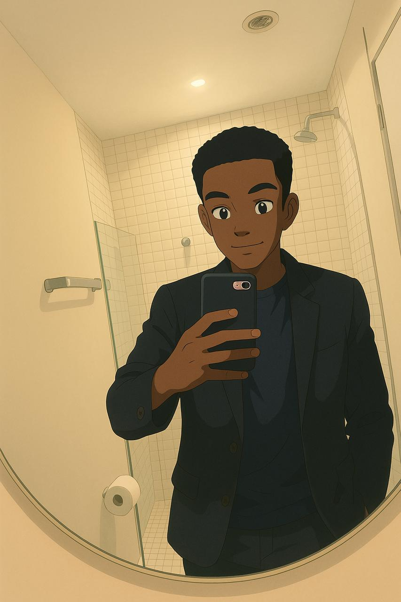

Saka é um estudante angolano dedicado e engajado no curso de Humanidades, atualmente no 4º semestre de sua graduação. Fluente em três idiomas – português, Lingala e inglês –, demonstra grande habilidade em comunicação multicultural, o que o torna apto a transitar por diferentes contextos culturais e linguísticos com naturalidade.
Com um perfil marcado pela adaptabilidade, Saka tem facilidade em ajustar-se rapidamente a novas situações e ambientes, sempre enfrentando desafios com uma atitude positiva. Suas habilidades de aprendizagem acelerada permitem que ele adquira novos conhecimentos e competências de maneira eficiente, seja no âmbito acadêmico, social ou profissional.
Seu interesse por temas humanos e sociais reflete um profundo compromisso em compreender as dinâmicas das sociedades e contribuir com soluções criativas para as questões contemporâneas. Além disso, Saka é reconhecido por sua curiosidade intelectual e determinação, atributos que impulsionam seu crescimento acadêmico e pessoal.
Com uma mente aberta e capacidade de colaborar em equipe, ele é uma inspiração para aqueles que buscam excelência em um mundo cada vez mais globalizado. Sua jornada acadêmica e perspectivas promissoras indicam que ele está preparado para continuar aprendendo, inovando e fazendo a diferença onde quer que esteja.
Espero que essa descrição esteja alinhada com o que você esperava! Se precisar de ajustes, é só falar. 😊